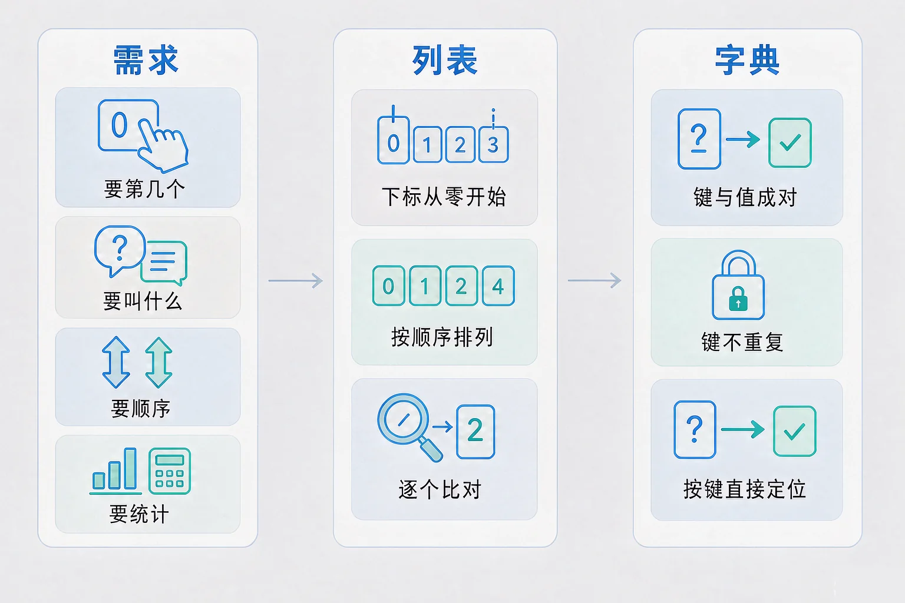
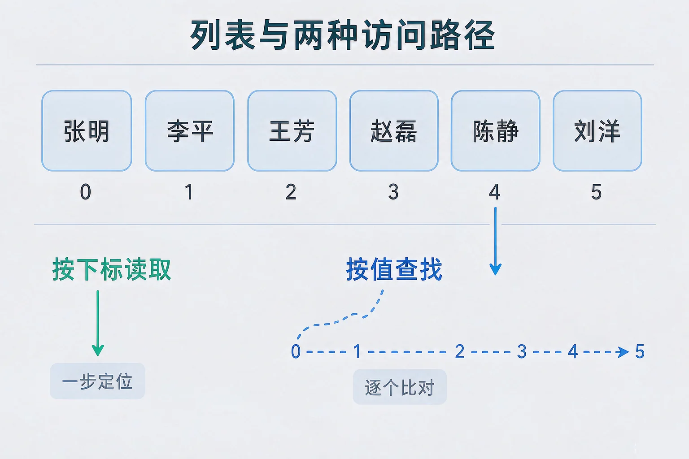
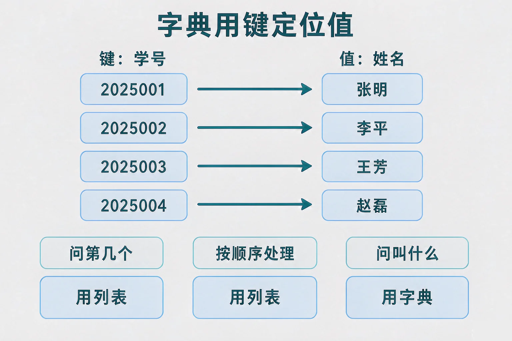

Gallery
v1.0.0 · skill v7.22.0
初中八年级 · 数据与算法
一个班四十个人的成绩，如果每人一个变量，还能问出「谁最高」这个问题吗？

选一个你真正好奇的问题，后面的实验都会围着它转。
选择或输入后，这节课会围绕你的问题展开。
先凭直觉选一个，选完立刻看到解释——错了也没关系，正好知道要重点听哪里。
1. 一个列表里有 6 个元素，下面哪个说法是正确的？
下标从 0 开始，所以长度为 6 的列表，下标是 0 到 5。错因提醒：同学最容易误认为「长度为几、下标就能取到几」，多算了一个位置——这是写程序时最常见的越界来源。
2. 在一个有一千个元素的列表里，下面哪一种操作花的时间基本不受数据量影响？
按下标读取是一次直接定位，数据再多也是同样一步。错因提醒：容易把「按下标读」和「按值找」搞混——后者必须从头逐个比对，代价会随数据量增长。
3. 要用学号直接查出某个学生的姓名，最合适的组织方式是：
这是「按名字找」的需求，是字典最擅长的场景。错因提醒：常见错误是认为列表什么都能干，于是明明知道学号，还要从头一个个比过去，白白付出成倍的代价。
为什么要学这一课？你已经会用变量保存单个数据，也采集过一组一组的观测值。但当数据变成几十条、上千条时，给每个数据单独起名字就撑不住了。所以我们需要把一组相关数据装进一个整体——这个整体就是数据结构，而列表是其中最基本的一种。
列表是按顺序排列的一组数据，每个元素有一个整数下标，下标从 0 开始。常用操作有：按下标读取、按下标修改、在末尾追加、在指定位置插入、删除某个元素、从头到尾遍历。
① 按下标读取
一次直接定位，第 0 个和第 999 个一样快。
② 按值查找
从头逐个比对，最坏要把全部比一遍。
③ 中间插删
不比较，但后面的元素要依次挪位。

🔍 深层理解 换个角度再看一遍这件事，看看能不能说出背后的原理。
看见它：同一组名字，装进列表之后就能整体传递、整体遍历，还能用长度描述它的规模——数据一旦有了结构，才有了「操作」的可能。
比较它：按下标读的第 0 个和第 999 个一样快，按值查找却会随位置往后而变慢。同一个列表，换一种用法，代价就从「与数据量无关」变成「随数据量增长」。
迁移它：排队、编号货架、座位表都是列表的思想：位置固定、可以按号直接找，但要在中间插一个人，后面所有人都得往后退一步。
五个名字排成一排，每个格子上标着下标。逐个试一遍五种操作，盯住下面的比较次数。
列表靠位置，字典靠名字。当你手上拿的是「某个标识」而不是「第几个」的时候，列表就只能一个个比过去——字典正是为这件事准备的。
字典用键来定位值，键与值成对出现，且同一个字典里的键是唯一的。取值时把键放进方括号即可，例如：成绩表["2025001"]。

最容易犯的两个错：一是误认为字典一定比列表好——如果需求本身是「按先后顺序处理」，字典反而丢掉了顺序这个信息，用列表才对；二是以为键可以是任意重复的值——同一个键只能对应一个值，重复的键会把原来的值覆盖掉。还要注意：字典的快是有前提的，只有查的字段正好是键，一次定位才成立；换个字段去查，代价照样会变大。
同一批二十条学生记录，分别用列表和字典存起来。拖一下查询次数，看看两种结构各比较了多少次。
题目：手上有一份原始记录，每行是「学号 姓名 成绩」，例如：二五零一 张明 九十二。现在有三个需求：①按学号查出成绩；②把全班成绩从高到低排名；③统计每个分数段有多少人。请分别说明该用什么结构，并写出关键步骤。
不少同学的第一反应是「全都用列表就行」，于是为了按学号查成绩，写下从头逐个比对的伪代码。它确实能跑通，但当数据量涨到几千条，每次查询都要比几千次——这不是程序写错了，而是结构选错了。另一处容易搞混的是把排名的结果和排名的过程混在一起：列表保存的是排好序的结果，比较与交换发生在过程中，两者都要用列表来承载顺序。
先凭直觉选一个，选完立刻看到解释——错了也没关系，正好知道要重点听哪里。
1. 下面哪句话是正确的？
键是唯一的标识，重复的键会把先前的值覆盖掉，所以它不能当「第几个」来用。错因提醒：最容易误认为字典就是「带名字的列表」，于是尝试用下标去取，或者以为重复键会并存。
2. 有一万条记录，要按学号查人，也可以按姓名查人。下面哪种设计最站得住脚？
键只能选一个字段，另一个字段的查询要靠遍历，所以常常是「字典 + 列表」配合使用。错因提醒：常见错误是误认为字典在所有场合都更快，忽略了它的快只对「键」这一列成立。
3. 关于「按值查找」和「按下标读取」，下面哪种判断最站得住脚？
两者的本质差别就是「要不要一个个比过去」。错因提醒：容易把按下标读取想象成「从头数过去」，其实它是一次直接定位——正是这个差别，让同一个列表在不同用法下性能天差地别。
为下面四个需求各选一种组织方式。没有哪种结构天生更好，关键是和需求对不对得上。
需求一：记录一列按先后到达的测量值，之后要按顺序逐个处理。
需求二：用学号直接查出某个学生的姓名。
需求三：保存全班学生记录：既要整体遍历，又要按学号查单个。
需求四：统计每个分数段各有多少人。
写下来，说给同桌听：如果需求三的数据量从四十条涨到四万条，你的设计会有什么变化？哪一步的代价会明显上升？
先凭直觉选一个，选完立刻看到解释——错了也没关系，正好知道要重点听哪里。
1. 图书馆要管理借阅记录：一条记录里有借书证号、书名、借出日期。要按借书证号快速查出这个人借了哪些书，最合适的做法是：
需求问的是「某个标识对应什么」，键恰好就是这个标识，字典一次定位即可。错因提醒：第二个选项不是做不到，而是每次都要比过全部记录；把「能实现」当成「合适」，是这一课最需要纠正的判断。
2. 一个采集设备连续记录温度读数，每分钟一条，事后要按时间顺序画出变化曲线。这份数据最应该用：
这里的需求是「按顺序处理」，字典反而会丢掉顺序。错因提醒：常见错误是误认为字典处处更好、无脑选字典；结构的选择依据是需求，不是「谁听起来更高级」。
3. 一个列表有 500 个元素，另一个字典有 500 个键值对。要判断「里面有没有某个值」，下面哪种说法是对的？
字典的优势只作用在「键」上，换一个字段去查，仍然要逐个比过去。错因提醒：把字典当成「无条件更快」，忽略了这个前提，是很容易犯的错误。
回到开头那个班：把四十条记录装进一个列表按座位顺序保存，另外建一个「学号到位置」的字典。要整体遍历就顺着列表走，要按学号找人就直接查字典——同一个班的数据，两种结构各管一件事，麻烦就不见了。
给别人讲一遍：请用「下标、键、逐个比对、一次定位」这四个词，说清楚列表和字典分别在什么场合更合适。
三层练习，做完第一、二层就算通关；第三层留给愿意继续探索的同学。
⭐ 基础巩固（必做）
⭐⭐ 能力应用（必做）
⭐⭐⭐ 迁移挑战（选做）
左边是学它之前要先会的，右边是学会之后可以继续探索的，下面是同一领域的伙伴知识。
图谱正在加载：首次进入需下载知识索引（约 1–3 秒），加载完成后本行会自动消失。